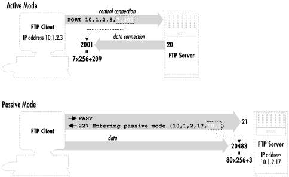
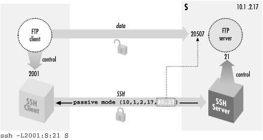
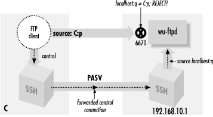
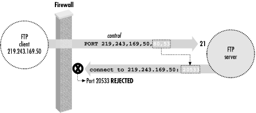
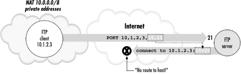
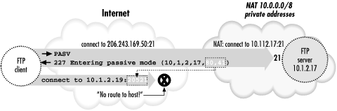
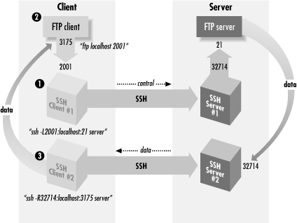

|  |
11.2. FTP Forwarding
One of the most frequently asked questions about SSH is, "How can I use port forwarding to secure FTP?" Unfortunately, the short answer is that you usually can't, at least not completely. Port forwarding can protect your account password, but usually not the files being transferred. Still, protecting your password is a big win, since the most egregious problem with FTP is that it reveals your password to network snoopers.[130][130]At least in its usual form. Some FTP implementations support more secure authentication methods, such as Kerberos. There are even protocol extensions that allow for encryption and cryptographic integrity checking of data connections. These techniques aren't widely implemented, however, and plaintext passwords with unprotected data connections are still the norm for FTP servers on the Internet.
This section explains in detail what you can and can't do with FTP and SSH, and why. Some difficulties are due to limitations of FTP, not only when interacting with SSH, but also in the presence of firewalls and network address translation (NAT). We will discuss each of these situations, since firewalls and NAT are common nowadays, and their presence might be the reason you're trying to forward FTP securely. If you are a system administrator responsible for both SSH and these networking components, we will try to guide you to a general understanding that will help you design and troubleshoot entire systems. Depending on your network environment, different problems may arise when combining SSH with FTP. Since we can't cover every possible environment, we describe each problem in isolation, illustrating its symptoms and recommending solutions. If you have multiple problems occurring simultaneously, the software behavior you observe might not match the examples we've given. We recommend reading the entire case study once (at least cursorily) before experimenting with your system, so you will have an idea of the problems you might encounter. Afterward, go ahead and try the examples at your computer.
11.2.1. The FTP Protocol
To understand the problems between FTP and SSH, you need to understand a bit about the FTP protocol. Most TCP services involve a single connection from client to server on a known, server-side port. FTP, however, involves multiple connections in both directions, mostly to unpredictable port numbers:- A single control connection for carrying commands from the client and responses from the server. It connects on TCP port 21 and persists for the entire FTP session.
- A number of data connections for transferring files and other data, such as directory listings. For each file transfer, a new data connection is opened and closed, and each one may be on a different port. These data connections may come from the client or the server.
You'll also see responses from the server, which the client prints by default. These are preceded by a numerical code:---> USER res
Here's a session in which the user res connects to an FTP server, logs in, and attempts to change directory twice, once successfully and once not:230 User res logged in.
The control connection can be secured by standard port forwarding because it is on a known port (21). Section 9.2, "Port Forwarding" In contrast, the destination port numbers for data connections are generally not known in advance, so setting up SSH forwarding for these connections is far more difficult. There's a second standard port number associated with FTP, the ftp-data port (20). But this is only the source port for data connections coming from the server; nothing ever listens on it. Surprisingly, the data connections generally go in the opposite direction from the control one; that is, the server makes a TCP connection back to the client in order to transfer data. The ports on which these connections occur can be negotiated dynamically by the FTP client and server, and doing so involves sending explicit IP address information inside the FTP protocol. These features of usual FTP operation can cause difficulties when forwarding SSH connections and in other scenarios involving firewalls or NAT. An alternative FTP mode, called passive mode, addresses one of these problems: it reverses the sense of the data connections, so that they go from the client to the server. Passive mode is a matter of FTP client behavior, and so is determined by a client setting. The behavior of setting up data connections from the server to the client, which we will call active-mode FTP, is traditionally the default in FTP clients, although that's changing. With a command-line client, the passive command switches to passive mode. The internal command that the client sends the server to tell it to enter passive mode is PASV. We discuss specific problems and how passive mode solves them, in upcoming sections. Figure 11-1 summarizes the workings of passive and active FTP.$ ftp -d aaor.lionaka.net Connected to aaor.lionaka.net. 220 aaor.lionaka.net FTP server (SunOS 5.7) ready. ---> SYST 215 UNIX Type: L8 Version: SUNOS Remote system type is UNIX. Using binary mode to transfer files. ftp> user res ---> USER res 331 Password required for res. Password: ---> PASS XXXX 230 User res logged in. ftp> cd rep ---> CWD rep 250 CWD command successful. ftp> cd utopia ---> CWD utopia 550 utopia: No such file or directory. ftp> quit ---> QUIT 221 Goodbye.

Figure 11-1. Basic FTP operation: control connection and active- versus passive-mode transfers
11.2.2. Forwarding the Control Connection
Since the FTP control connection is just a single, persistent TCP connection to a well-known port, you can forward it through SSH. As usual, the FTP server machine must be running an SSH server, and you must have an account on it that you may access via SSH (see Figure 11-2).
Figure 11-2. Forwarding the control connection
Suppose you are logged into the machine client and want to connect securely to an FTP server on the machine server. To forward the FTP control connection, run a port-forwarding command on client:[131][131]If you're using the popular ncftp client, run this instead: ncftp ftp://client:2001.
Then, to use the forwarded port:client% ssh -L2001:server:21 server
There are two important things to notice about the commands we just recommended. We will discuss each.client% ftp localhost 2001 Connected to localhost 220 server FTP server (SunOS 5.7) ready. Password: 230 User res logged in. ftp> passive Passive mode on. ftp> ls ... and so on
- The target of the forwarding is server, not localhost.
- The client uses passive mode.
11.2.2.1. Choosing the forwarding target
We chose server as the target of our forwarding, not localhost (i.e., we didn't use -L2001:localhost:21). This is contrary to our previous advice, which was to use localhost where possible as the forwarding target. [Section 9.2.8, "Choosing the Target Forwarding Address"] Well, that technique isn't advisable here. Here's what can happen if you do:The problem is a bit obscure but can be revealed by an execution trace of the FTP server as it responds to the ls command. The following output was produced by the Linux strace command:[132]client% ftp localhost 2001 Connected to client 220 client FTP server (SunOS 5.7) ready. 331 Password required for res. Password: 230 User res logged in. ftp> ls 200 PORT command successful. 425 Can't build data connection: Cannot assign requested address. ftp>
[132]If you're on a Solaris 2 (SunOS 5) system, the corresponding operating system-supplied program is called truss. There is also an strace program with Solaris, but it is completely unrelated. Solaris 1 (SunOS 4 and earlier) has a trace command, and BSD has ktrace.
so_socket(2, 2, 0, "", 1) = 5
bind(5, 0x0002D614, 16, 3) = 0
AF_INET name = 127.0.0.1 port = 20
connect(5, 0x0002D5F4, 16, 1) Err#126 EADDRNOTAVAIL
AF_INET name = 192.168.10.1 port = 2845
write(1, " 4 2 5 C a n ' t b u".., 67) = 67In this case, the failure is a slightly different manifestation of the same problem. This time, the server listens for an incoming data connection from the client, but again, it thinks the client is local so it listens on its loopback address. It sends this socket (address 127.0.0.1, port 32901) to the client, and the client tries to connect to it. But this causes the client to try to connect to port 32901 on the client host, not the server! Nothing is listening there, of course, so the connection is refused.ftp> passive Passive mode on. ftp> ls 227 Entering Passive Mode (127,0,0,1,128,133) ftp: connect: Connection refused ftp>
11.2.2.2. Using passive mode
Note that we had to put the client into passive mode. You will see later that passive mode is beneficial for FTP in general, because it avoids some common firewall and NAT problems. Here, however, it's used because of a specific FTP/SSH problem; if you didn't, here's what happens:This is a mirror image of the problem we saw when localhost was the forwarding target, but this time it happens on the client side. The client supplies a socket for the server to connect to, and since it thinks the server is on the local host, that socket is on the loopback address. This causes the server to try connecting to its local host instead of the client machine. Passive mode can't always be used: the FTP client or server might not support it, or server-side firewall/NAT considerations may prevent it (you'll see an example of that shortly). If so, you can use the GatewayPorts feature of SSH and solve this problem as we did the previous one: use the host's real IP address instead of the loopback. To wit:$ ftp -d localhost 2001 Connected to localhost. 220 server FTP server (SunOS 5.7) ready. ---> USER res 331 Password required for res. Password: ---> PASS XXXX 230 User res logged in. ftp> ls ---> PORT 127,0,0,1,11,50 200 PORT command successful. ---> LIST 425 Can't build data connection: Connection refused. ftp>
Then connect to the client machine by name, rather than to localhost:client% ssh -g -L2001:server:21 server
This connects to the SSH proxy on the client's nonloopback address, causing the FTP client to listen on that address for data connections. The -g option has security implications, however. [Section 9.2.1.1, "Local forwarding and GatewayPorts"] Of course, as we mentioned earlier, it's often the case that active-mode FTP isn't usable. It's perfectly possible that your local firewall/NAT setup requires passive mode, but you can't use it. In that case, you're just out of luck. Put your data on a diskette and contribute to the local bicycle-courier economy. The various problems we have described, while common, depend on your particular Unix flavor and FTP implementation. For example, some FTP servers fail even before connecting to a loopback socket; they see the client's PORT command and reject it, printing "illegal PORT command". If you understand the reasons for the various failure modes, however, you will learn to recognize them in different guises.client% ftp client 2001
11.2.2.3. The "PASV port theft" problem
Trying to use FTP with SSH can be sort of like playing a computer dungeon game: you find yourself in a twisty maze of TCP connections, all of which look alike and none of which seem to go where you want. Even if you follow all of our advice so far, and understand and avoid the pitfalls we've mentioned, the connection might still fail:Assuming you don't decide to give up entirely and move into a less irritating career, you may want to know, "What now?" The problem here is a security feature of the FTP server, specifically the popular wu-ftpd from Washington University. (See http://www.wu-ftpd.org/. This feature might be implemented in other FTP servers, but we haven't seen it.) The server accepts an incoming data connection from the client, then notices that its source address isn't the same as that of the control connection (which was forwarded through SSH and thus comes from the server host). It concludes that an attack is in progress! The FTP server believes someone has been monitoring your FTP control connection, seen the server response to the PASV command containing the listening socket, and jumped in to connect to it before the legitimate client can do so. So the server drops the connection and reports the suspected "port theft" (see Figure 11-3).ftp> passive Passive mode on. ftp> ls connecting to 192.168.10.1:6670 Connected to 192.168.10.1 port 6670 425 Possible PASV port theft, cannot open data connection. ! Retrieve of folder listing failed

Figure 11-3. "PASV port theft"
There's no way around this problem but to stop the server from performing this check. It's a problematic feature to begin with, since it prevents not only attacks but also legitimate FTP operations. For example, passive-mode operation was originally intended to allow an FTP client to effect a file transfer between two remote servers directly, rather than first fetching the file to the client and then sending it to the second server. This isn't a common practice, but it is part of the protocol design, and the "port theft" check of wu-ftpd prevents its use. You can turn it off by recompiling wu-ftpd without FIGHT_PASV_PORT_RACE (use configure -- disable-pasvip). You can also leave the check on but allow certain accounts to use alternate IP addresses for data connections, with the pasv-allow and port-allow configuration statements. See the ftpaccess (5) manpage for details. Note that these features are relatively recent additions to wu-ftpd and aren't in earlier versions.11.2.3. FTP, Firewalls, and Passive Mode
Recall that in active mode, the FTP data connections go in the opposite direction than you might expect -- from the server back to the client. This usual mode of operation (shown in Figure 11-4) often develops problems in the presence of a firewall. Suppose the client is behind a firewall that allows all outbound connections but restricts inbound ones. Then the client can establish a control connection to log in and issue commands, but data-transfer commands such as ls, get, and put will fail, because the firewall blocks the data connections coming back to the client machine. Simple packet-filtering firewalls can't be configured to allow these connections, because they appear as separate TCP destinations to random ports, with no obvious relation to the established FTP control connection.[133] The failure might happen quickly with the message "connection refused," or the connection might hang for a while and eventually fail. This depends on whether the firewall explicitly rejects the connection attempt with an ICMP or TCP RST message, or just silently drops the packets. Note that this problem can occur whether or not SSH is forwarding the control connection.[133]More sophisticated firewalls can take care of this problem. These products are a cross between an application-level proxy and a packet filter and are often called "transparent proxies" or "stateful packet filters." Such a firewall understands the FTP protocol and watches for FTP control connections. When it sees a PORT command issued by an FTP client, it dynamically opens a temporary hole in the firewall, allowing the specified FTP data connection back through. This hole disappears automatically after a short time and can only be between the socket given in the PORT command and the server's ftp-data socket. These products often also do NAT and can transparently deal with the FTP/NAT problems we describe next.

Figure 11-4. FTP client behind a firewall
Passive mode usually solves this problem, reversing the direction of data connections so they go from the client to the server. Unfortunately, not all FTP client or servers implement passive-mode transfers. Command-line FTP clients generally use the passive command to toggle passive-mode transfers on and off; if it doesn't recognize that command, it probably doesn't do passive mode. If the client supports passive mode but the server doesn't, you may see a message like "PASV: command not understood" from the server. PASV is the FTP protocol command that instructs the server to listen for data connections. Finally, even if passive mode solves the firewall problem, it doesn't help with SSH forwarding, since the ports in question are still dynamically chosen. Here is an example of the firewall problem, blocking the return data connections:Passive mode comes to the rescue:$ ftp lasciate.ogni.speranza.org Connected to lasciate.ogni.speranza.org 220 ProFTPD 1.2.0pre6 Server (Lasciate FTP Server) [lasciate.ogni.speranza.org]331 Password required for slade. Password: 230 User slade logged in. Remote system type is UNIX. Using binary mode to transfer files. ftp> ls 200 PORT command successful. [...long wait here...] 425 Can't build data connection: Connection timed out
Now, in discussing the problem of using FTP through a firewall, we didn't mention SSH at all; it is a problem inherent in the FTP protocol and firewalls. However, even when forwarding the FTP control connection through SSH, this problem still applies, since the difficulty is with the data connection, not the control, and those don't go through SSH. So this is yet another reason why you will normally want to use passive mode with FTP and SSH.ftp> passive Passive mode on. ftp> ls 227 Entering Passive Mode (10,25,15,1,12,65) 150 Opening ASCII mode data connection for file list drwxr-x--x 21 slade web 2048 May 8 23:29 . drwxr-xr-x 111 root wheel 10240 Apr 26 00:09 .. -rw------- 1 slade other 106 May 8 15:22 .cshrc -rw------- 1 slade other 31384 Aug 18 1997 .emacs 226 Transfer complete. ftp>
11.2.4. FTP and Network Address Translation (NAT)
Passive-mode transfers can also work around another common problem with FTP: its difficulties with network address translation, or NAT. NAT is the practice of connecting two networks by a gateway that rewrites the source and destination addresses of packets as they pass through. One benefit is that you may connect a network to the Internet or change ISPs without having to renumber the network (that is, change all your IP addresses). It also allows sharing a limited number of routable Internet addresses among a larger number of machines on a network using private addresses not routed on the Internet. This flavor of NAT is often called masquerading. Suppose your FTP client is on a machine with a private address usable only on your local network, and you connect to the Internet through a NAT gateway. The client can establish a control connection to an external FTP server. However, there will be a problem if the client attempts the usual reverse-direction data connections. The client, ignorant of the NAT gateway, tells the server (via a PORT command) to connect to a socket containing the client's private address. Since that address isn't usable on the remote side, the server generally responds "no route to host" and the connection will fail.[134] Figure 11-5 illustrates this situation. Passive mode gets around this problem as well, since the server never has to connect back to the client and so the client's address is irrelevant.[134]It could be worse, too. The server could also use private addressing, and if you're unlucky, the client's private address might coincidentally match a completely different machine on the server side. It's unlikely, though, that a server-side machine would happen to listen on the random port picked by your FTP client, so this would probably just generate a "connection refused" error.

Figure 11-5. Client-side NAT prevents active-mode FTP transfers
So far, we've listed three situations requiring passive-mode FTP: control connection forwarding, client inside a firewall, and client behind NAT. Given these potential problems with active-mode FTP, and that there's no down side to passive mode we know of, we recommend always using passive mode FTP if you can.11.2.4.1. Server-side NAT issues
The NAT problem we just discussed was a client-side issue. There is a more difficult problem that can occur if the FTP server is behind a NAT gateway, and you're forwarding the FTP control connection through SSH. First, let's understand the basic problem without SSH in the picture. If the server is behind a NAT gateway, then you have the mirror-image problem to the one discussed earlier. Before, active-mode transfers didn't work because the client supplied its internal, non-NAT'd address to the server in the PORT command, and this address wasn't reachable. In the new situation, passive-mode transfers don't work because the server supplies its internal-only address to the client in the PASV command response, and that address is unreachable to the client (see Figure 11-6).
Figure 11-6. Server-side NAT prevents passive-mode FTP transfers
The earlier answer was to use passive mode; here the simplest answer is the reverse: use active mode. Unfortunately, this isn't very helpful. If the server is intended for general Net access, it should be made useful to the largest number of people. Since client-side NAT and firewall setups requiring passive-mode FTP are common, it won't do to use a server-side NAT configuration that requires active mode instead; this makes access impossible. One approach is to use an FTP server with special features designed to address this very problem. The wu-ftpd server we touched on earlier has such a feature. Quoting from the ftpaccess (5) manpage:passive address <externalip> <cidr>
Allows control of the address reported in response to
a PASV command. When any control connection matching
the <cidr> requests a passive data connection (PASV),
the <externalip> address is reported. NOTE: this
does not change the address the daemon actually lis-
tens on, only the address reported to the client.
This feature allows the daemon to operate correctly
behind IP-renumbering firewalls.
For example:
passive address 10.0.1.15 10.0.0.0/8
passive address 192.168.1.5 0.0.0.0/0
Clients connecting from the class-A network 10 will be
told the passive connection is listening on IP-address
10.0.1.15 while all others will be told the connection is
listening on 192.168.1.5
Multiple passive addresses may be specified to handle com-
plex, or multi-gatewayed, networks.11.2.5. All About Data Connections
Ask most SSH users about forwarding the FTP data connection, and they'll respond, "Sorry, it's not possible." Well, it is possible. The method we've discovered is obscure, inconvenient, and not usually worth the effort, but it works. Before we can explain it, we must first discuss the three major ways that FTP accomplishes file transfers between client and server:- The usual method
- Passive-mode transfers
- Transfers using the default data ports
11.2.5.1. The usual method of file transfer
Most FTP clients attempt data transfers in the following way. After establishing the control connection and authenticating, the user issues a command to transfer a file. Suppose the command is get fichier.txt, which asks to transfer the file fichier.txt from the server to the client. In response to this command, the client selects a free local TCP socket, call it C, and starts listening on it. It then issues a PORT command to the FTP server, specifying the socket C. After the server acknowledges this, the client issues the command RETR fichier.txt, which tells the server to connect to the previously given socket (C) and send the contents of that file over the new data connection. The client accepts the connection to C, reads the data, and writes it into a local file also called fichier.txt. When done, the data connection is closed. Here is a transcript of such a session:Note the PORT command, PORT 219,243,169,50,9,226. This says the client is listening on IP address 219.243.169.50, port 2530 = (9<<8)+226; the final two integers in the comma-separated list are the 16-bit port number represented as two 8-bit bytes, most significant byte first. The server response beginning with "150" confirms establishment of the data connection to that socket. What isn't shown is that the source port of that connection is always the standard FTP data port, port 20 (remember that FTP servers listen for incoming control connections on port 21). There are two important points to note about this process:$ ftp -d aaor.lionaka.net Connected to aaor.lionaka.net. 220 aaor.lionaka.net FTP server (SunOS 5.7) ready. ---> USER res 331 Password required for res. Password: ---> PASS XXXX 230 User res logged in. ---> SYST 215 UNIX Type: L8 Version: SUNOS Remote system type is UNIX. Using binary mode to transfer files. ftp> get fichier.txt local: fichier.txt remote: fichier.txt ---> TYPE I 200 Type set to I. ---> PORT 219,243,169,50,9,226 200 PORT command successful. ---> RETR fichier.txt 150 Binary data connection for fichier.txt (219.243.169.50,2530) (10876 bytes). 226 Binary Transfer complete. 10876 bytes received in 0.013 seconds (7.9e+02 Kbytes/s) ftp> quit
- The data connection socket is chosen on the fly by the client. This prevents forwarding, since you can't know the port number ahead of time to forward it with SSH. You can get around this problem by establishing the FTP process "by hand" using telnet. That is, choose a data socket beforehand and forward it with SSH, telnet to the FTP server yourself, and issue all the necessary FTP protocol commands by hand, using your forwarded port in the PORT command. But this can hardly be called convenient.
- Remember that the data connection is made in the reverse direction from the control connection; it goes from the server back to the client. As we discussed earlier in this chapter, the usual workaround is to use passive mode.
11.2.5.2. Passive mode in depth
Recall that in a passive-mode transfer, the client initiates a connection to the server. Specifically, instead of listening on a local socket and issuing a PORT command to the server, the client issues a PASV command. In response, the server selects a socket on its side to listen on and reveals it to the client in the response to the PASV command. The client then connects to that socket to form the data connection, and issues the file-transfer command over the control connection. With command line-based clients, the usual way to do passive-mode transfers is to use the passive command. Again, an example:Note that after the user gives the ls command, the client sends PASV instead of PORT. The server responds with the socket on which it will listen. The client issues the LIST command to list the contents of the current remote directory, and connects to the remote data socket; the server accepts and confirms the connection, then transfers the directory listing over the new connection. An interesting historical note, which we alluded to earlier, is that the PASV command wasn't originally intended for this use; it was designed to let an FTP client direct a file transfer between two remote servers. The client makes control connections to two remote servers, issues a PASV command to one causing it to listen on a socket, issues a PORT command to the other telling it to connect to the other server on that socket, then issues the data-transfer command (STOR, RETR, etc.). These days, most people don't even know this is possible, and will pull a file from one server to the local machine, and transfer it again to get it to the second remote machine. It's so uncommon that many FTP clients don't support this mode, and some servers prevent its use for security reasons. [Section 11.2.2.3, "The "PASV port theft" problem"]$ ftp -d aaor.lionaka.net Connected to aaor.lionaka.net. 220 aaor.lionaka.net FTP server (SunOS 5.7) ready. ---> USER res 331 Password required for res. Password: ---> PASS XXXX 230 User res logged in. ---> SYST 215 UNIX Type: L8 Version: SUNOS Remote system type is UNIX. Using binary mode to transfer files. ftp> passive Passive mode on. ftp> ls ---> PASV 227 Entering Passive Mode (219,243,169,52,128,73) ---> LIST 150 ASCII data connection for /bin/ls (219.243.169.50,2538) (0 bytes). total 360075 drwxr-xr-x98 res 500 7168 May 5 17:13 . dr-xr-xr-x 2 root root 2 May 5 01:47 .. -rw-rw-r-- 1 res 500 596 Apr 25 1999 .FVWM2-errors -rw------- 1 res 500 332 Mar 24 01:36 .ICEauthority -rw------- 1 res 500 50 May 5 01:45 .Xauthority -rw-r--r-- 1 res 500 1511 Apr 11 00:08 .Xdefaults 226 ASCII Transfer complete. ftp> quit ---> QUIT 221 Goodbye.
11.2.5.3. FTP with the default data ports
The third file-transfer mode occurs if the client issues neither a PORT nor a PASV command. In this case, the server initiates the data connection from the well-known ftp-data port (20) to the source socket of the control connection, on which the client must be listening (these sockets are the "default data ports" for the FTP session). The usual way to use this mode is with the FTP client command sendport, which switches on and off the client's feature of using a PORT command for each data transfer. For this mode, we want it turned off, and it is generally on by default. So the sequence of steps is this:- The client initiates the control connection from local socket C to server:21.
- The user gives the sendport command, and then a data-transfer command, such as put or ls. The FTP client begins listening on socket C for an incoming TCP connection.
- The server determines the socket C at the other end of the control connection. It doesn't need the client to send this explicitly via the FTP protocol, since it can just ask TCP for it (e.g., with the getpeername() sockets API routine). It then opens a connection from its ftp-data port to C, and sends or receives the requested data over that connection.
These problems are due to a technicality of the TCP protocol. In this scenario, every data connection is between the same two sockets, server:ftp-data and C. Since a TCP connection is fully specified by the pair of source and destination sockets, these connections are indistinguishable as far as TCP is concerned; they are different incarnations of the same connection and can't exist at the same time. In fact, to guarantee that packets belonging to two different incarnations of a connection aren't confused, there's a waiting period after one incarnation is closed, during which a new incarnation is forbidden. In the jargon of TCP, on the side that performed an "active close" of the connection, the connection remains in a state called TIME_WAIT. This state lasts for a period that is supposed to be twice the maximum possible lifetime of a packet in the network (or "2MSL", for two times the Maximum Segment Lifetime). After that, the connection becomes fully closed, and another incarnation can occur. The actual value of this timeout varies from system to system, but is generally in the range of 30 seconds to 4 minutes.[135]aaor% ftp syrinx.lionaka.net Connected to syrinx.lionaka.net. 220 syrinx.lionaka.net FTP server (Version wu-2.5.0(1) Tue Sep 21 16:48:12 EDT 331 Password required for res. Password: 230 User res logged in. ftp> sendport Use of PORT cmds off. ftp> ls 150 Opening ASCII mode data connection for file list. keep fichier.txt 226 Transfer complete. 19 bytes received in 0.017 seconds (1.07 Kbytes/s) ftp> ls 425 Can't build data connection: Cannot assign requested address. ftp> quit
[135]See TCP/IP Illustrated, Volume 1: The Protocols, by W. Richard Stevens (Addison-Wesley), for more technical information about the TIME_WAIT state.As it happens, some TCP implementations enforce even stronger restrictions. Often, a port that is part of a socket in the TIME_WAIT state is unavailable for use, even as part of a connection to a different remote socket. We have also run into systems that disallow listening on a socket that is currently an endpoint of some connection, regardless of the connection state. These restrictions aren't required by the TCP protocol, but they are common. Such systems usually provide a way to avoid the restrictions, such as the SO_REUSEADDR option of the Berkeley sockets API. An FTP client generally uses this feature, of course, but it doesn't always work! This address-reuse problem comes up in two places in a default-port FTP transfer. The first one is when the client must start listening on its default data port, which by definition is currently the local endpoint of its control connection. Some systems simply don't allow this, even if the program requests address reuse; that's why the attempt might fail immediately with the message, "address already in use." The other place is on a second data transfer. When the first transfer is finished, the server closes the data connection, and that connection on the server side moves into the TIME_WAIT state. If you try another data transfer before the 2MSL period has elapsed, the server tries to set up another incarnation of the same connection, and it will fail saying "cannot assign requested address." This happens regardless of the address reuse setting, since the rules of the TCP require it. You can transfer a file again within a few minutes, of course, but most computer users aren't good at waiting a few seconds, let alone minutes. It is this problem that prompts the use of a PORT command for every transfer; since one end of the connection is different every time, the TIME_WAIT collisions don't occur. Because of these problems, the default-port transfer mode isn't generally used. It has, however, an important property for us: it is the only mode in which the data connection destination port is fixed and knowable before the data-transfer command is given. With this knowledge, some patience, and fair amount of luck, it is possible to forward your FTP data connections through SSH.
11.2.6. Forwarding the Data Connection
With all the foregoing discussion in mind, here we simply state the sequence of steps to set up data-connection forwarding. The tricky part is that SSH must request address reuse from TCP for forwarded ports. SSH2 and OpenSSH do this already, but SSH1 can't. It's is an easy source modification to make for SSH1, though. In the routine channel_request_local_forwarding in newchannels.c, add the following code right before the call to bind( ) (in Version 1.2.27, this is at line 1438):...
sin.sin_port = htons(port);
{
int flag = 1;
setsockopt(sock, SOL_SOCKET, SO_REUSEADDR, (void *)&flag,
sizeof(flag));
}
/* Bind the socket to the address. */
if (bind(sock, (struct sockaddr *)&sin, sizeof(sin)) < 0)
packet_disconnect("bind: %.100s", strerror(errno));
...then your operating system probably won't cooperate. There may be a way to alter this behavior; check the operating system documentation. Figure 11-7 illustrates the following steps.ftp: bind: Address already in use

Figure 11-7. Forwarding the FTP data connection
- Start an SSH connection to forward the control channel as shown
earlier in this chapter, and connect with the FTP client. Make sure
that passive mode is off.
or for SSH2:client% ssh1 -f -n -L2001:localhost:21 server sleep 10000 &
Then:client% ssh2 -f -n -L2001:localhost:21 server
Note that we are using localhost as the forwarding target here, despite our earlier advice. That's OK, because there won't be any PORT or PASV commands with addresses that can be wrong.client% ftp localhost 2001 Connected to localhost 220 server FTP server (SunOS 5.7) ready. Password: 230 User res logged in. ftp> sendport Use of PORT cmds off. ftp> passive Passive mode on. ftp> passive Passive mode off.
- Now, we need to determine the real and proxy default data ports for
the FTP client. On the client side, you can do this with
netstat:
This shows that the source of the control connection from the FTP client to SSH is port 3175. You can do the same thing on the server side, but this time you need to know what's connected to the FTP server port (netstat -n | egrep `\<21\>' ), and there may be many things connected to it. If you have a tool like lsof, it's better to find out the pid of the ftpd or sshd serving your connection and use lsof -p <pid> to find the port number. If not, you can do a netstat before connecting via FTP and then one right afterward, and try to see which is the new connection. Let's suppose you're the only one using the FTP server, and you get it this way:client% netstat -n | grep 2001 tcp 0 0 client:2001 client:3175 ESTABLISHED tcp 0 0 client:3175 client:2001 ESTABLISHED
So now, we have the FTP client's default data port (3175), and the source port of the forwarded control connection to the FTP server (32714), which we'll call the proxy default data port; it is what the FTP server thinks is the client's default data port.server% netstat | grep ftp tcp 0 0 server:32714 server:ftp ESTABLISHED tcp 0 0 server:ftp server:32714 ESTABLISHED
- Now, forward the proxy default
data port to the real one:
If, as we mentioned earlier, you don't replace sshd or run a second one, then you'd use the modified ssh on the server in the other direction, like this:# SSH1, OpenSSH client% ssh1 -f -n -R32714:localhost:3175 server sleep 10000 & # SSH2 only client% ssh2 -f -R32714:localhost:3175 server
server% ./ssh -f -n -L32714:localhost:3175 client sleep 10000 &
- Now, try a data-transfer command with ftp. If
all goes well, it should work once, then fail with this message from
the FTP server:
(Some FTP servers return that error immediately; others will retry several times before giving up, so it may take a while for that error to appear.) If you wait for the server's 2MSL timeout period, you can do another single data transfer. You can use netstat to see the problem and track its progress:425 Can't build data connection: Address already in use.
The first two lines show the established control connection on port 21; the third one shows the old data connection to port 20, now in the TIME_WAIT state. When that disappears, you can do another data transfer command.server% netstat | grep 32714 127.0.0.1.32714 127.0.0.1.21 32768 0 32768 0 ESTABLISHED 127.0.0.1.21 127.0.0.1.32714 32768 0 32768 0 ESTABLISHED 127.0.0.1.20 127.0.0.1.32714 32768 0 32768 0 TIME_WAIT
|  | |
| 11. Case Studies |  | 11.3. Pine, IMAP, and SSH |